If you haven't yet, download and install Android Studio. It is best to have the latest stable version from the Android Studio download page.
For more detailed instructions, follow the Download and install Android Studio codelab.
It can take a while for the emulator image to download, so while you are waiting, create a new emulator.
For more detailed instructions, follow the Run your first app on the Android Emulator codelab - Step 3.
The demo app for this codelab is Game Night Guru, a boardgame collection manager and play tracker. It helps hobbyists keep track of the games they own and log their gaming sessions.
You can also clone it from github:
| Game Night Guru | Game List | Game Detail (Play Log) | Add Play Dialog |
|---|---|---|---|
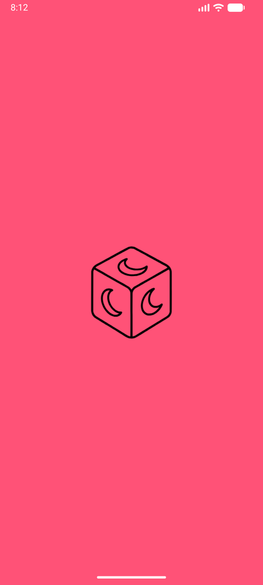 | 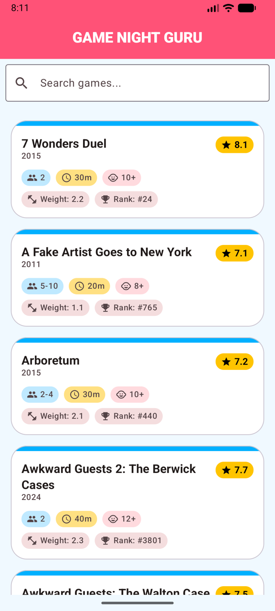 | 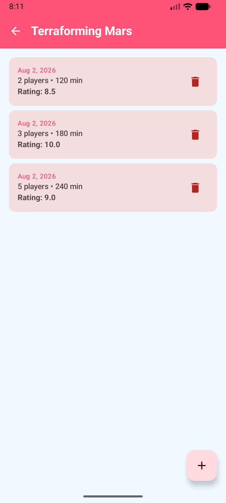 | 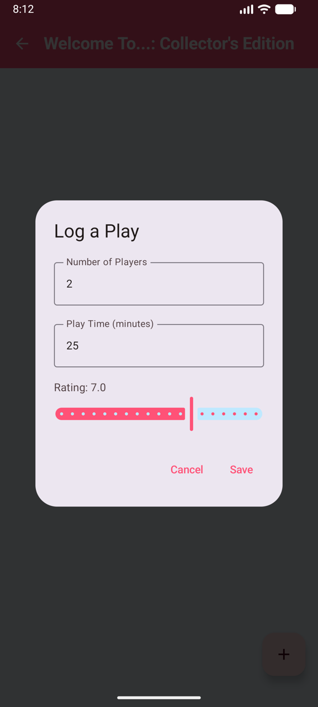 |
The main screen of the app displays the board game collection. Each entry provides a quick glance at the game's title and its player count range.
The detail screen provides a deeper dive into a specific game. Here you can see:
From the Game Detail screen, you can open the Add Play dialog. This allows you to enter:
The app is built using modern Android development practices:
data/database: Room entity, DAO, and Database definition.data/repository: Data source abstraction.data/importer: Logic for parsing the CSV file.ui/list: Screen and ViewModel for displaying the game list.ui/detail: Screen and ViewModel for displaying the game detail (play log) & add play dialog.ui/components: Reusable UI components.di: Hilt modules for dependency injection.Content for step 2...
Now that we have some App Functions for Game Night Guru, it’s time to see them in action. We are going to test the plumbing to make sure the Android system sees our functions using ADB from the command line, and then use a testing agent to watch Gemini interact with our app.
Make sure you have created an emulator (see step Create an Android Emulator) or connect a physical Android device via a cable and installed Game Night Guru onto the device.
Before we can use ADB, we need to enable Developer Options on your physical device.

ADB is the command-line tool that lets your computer talk to your Android device or emulator. Because we are using Android Studio for this codelab, you likely already have it installed! We just need to make sure you can run it from your terminal.
To check that you have it installed, open your terminal and run:
adb
You should see the version and install location:
you@YourComputer GameNightGuru % adb
Android Debug Bridge version 1.0.41
Version 36.0.0-13206524
Installed as /opt/homebrew/bin/adb
Running on Darwin 25.5.0 (arm64)
If you don't see this, you can follow these install instructions:
Using Android Studio
Go to Tools > SDK Manager > SDK Tools and check Android SDK Platform-Tools and press OK
For Mac Users:
The easiest way is using Homebrew. Open your terminal and run:
brew install android-platform-tools
For Windows Users:
The fastest way is using Winget. Open PowerShell or Command Prompt and run:
winget install Google.PlatformTools
(Alternatively, download the SDK Platform-Tools zip file, extract it, and add the folder to your Windows system Environment Variables).
Verify it works:
Try adb now!
Plug in your device or start your emulator and run:
adb devices
If you see a device listed, you are ready to go!
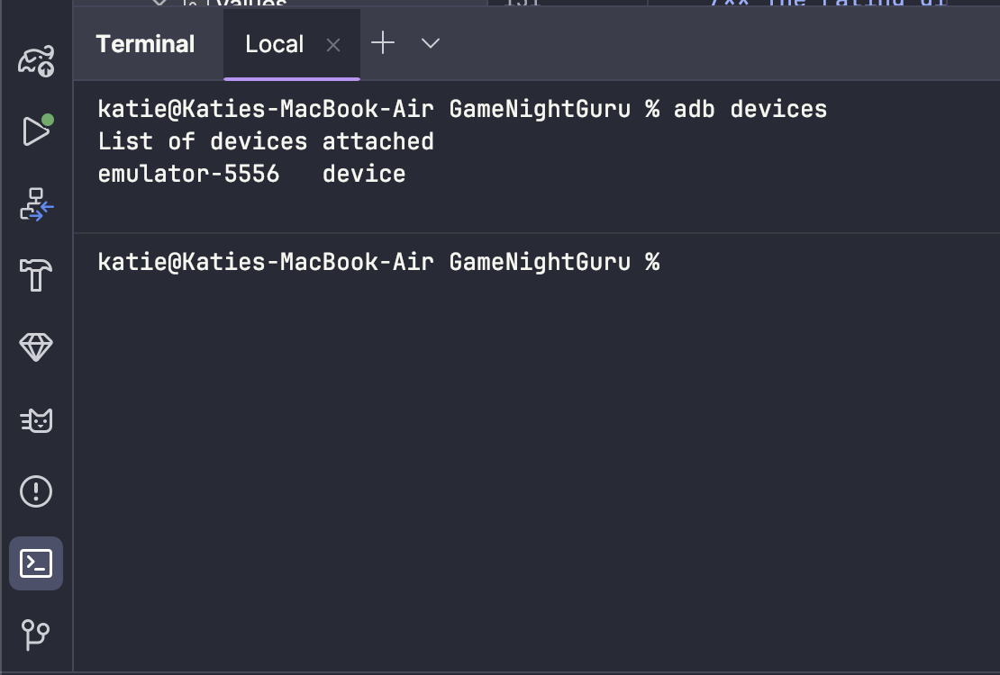
Before we bring AI into the mix, let’s verify that the Android OS has successfully registered the App Functions we just built.
Run this command in your terminal to list all App Functions currently registered on your device:
adb shell cmd app_function list-app-functions
Because that list can get long, you can filter it specifically for Game Night Guru using grep:
adb shell cmd app_function list-app-functions | grep -A 20 dev.katiebarnett.gamenightguru
If you see the functions we wrote (like queryGames), everything is working and Game Night Guru is exposing its capabilities to the OS!
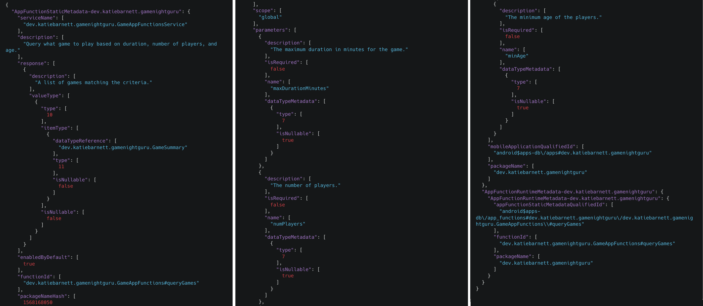
If you don't include the grep command (delete the | grep -A 20 dev.katiebarnett.gamenightguru part) , what other app functions do you see on this device? Perhaps try it when you have your actual phone connected. Are any of your favourite apps already using App Functions?
Google provides a privileged Testing Agent app that acts as a stand-in for Gemini. This allows us to test end-to-end workflows without needing a full production system.
cd appfunctions/agent
./run_privileged.sh --build
⚠️ Important Note for Windows Users:
Because this is a .sh shell script, it will not run in standard Command Prompt or PowerShell. You must run this command using Git Bash (which is installed automatically if you have Git for Windows) or WSL (Windows Subsystem for Linux).
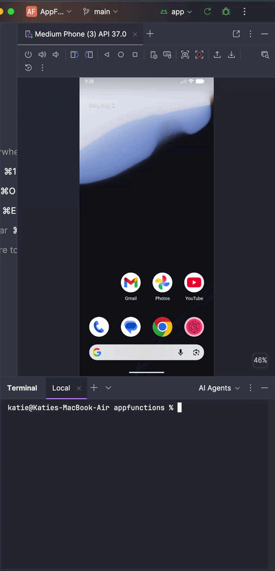
The first thing we can do is check that the agent sees the App Functions. You can enter parameters and get back the exact results the function returns (no AI involvement yet) and execute functions that update the data.
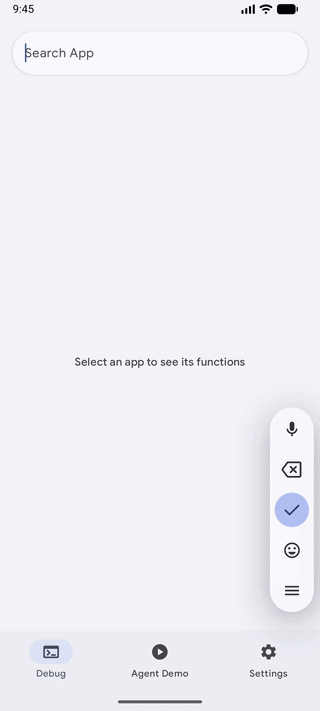
Now we know it can see our app and the available App Functions, let's hook it up to Gemini!
To give our Testing Agent a brain, we need a Gemini API key. We will be using the free tier so no need to add a credit card or sign up to a pro plan.
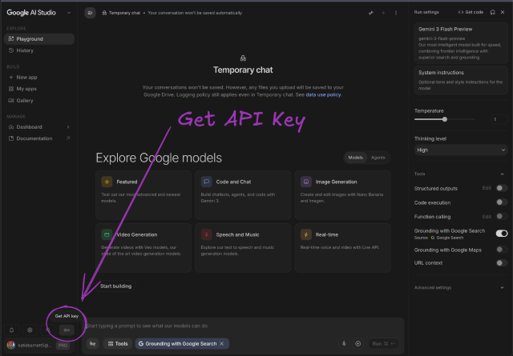
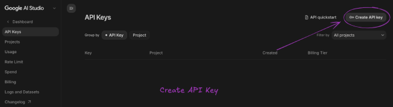
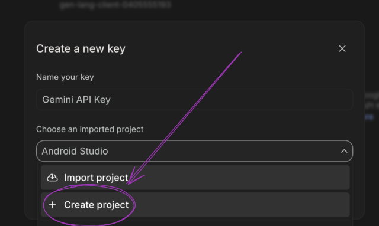
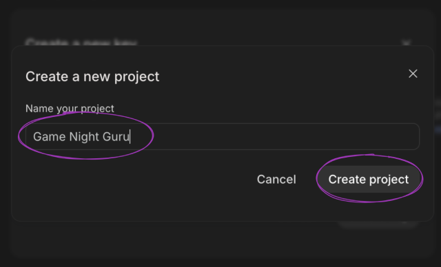
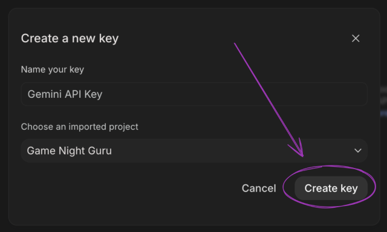
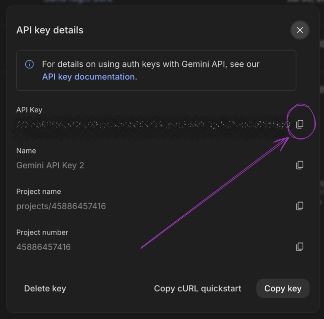
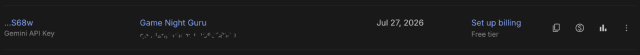
This is where the magic happens. We are going to ask the agent a natural language question and watch it trigger our app's specific function.
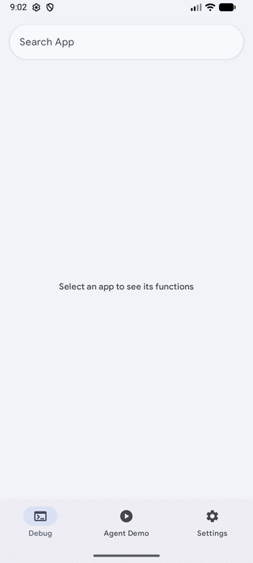
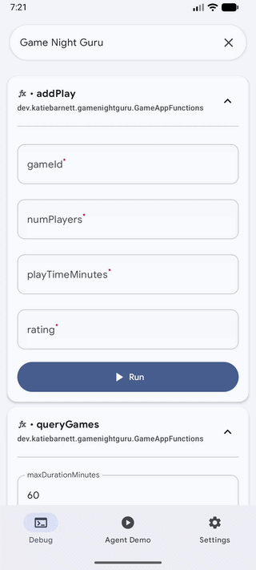
Some sequences may be shortened!You will see the agent process the prompt (note - it may take a bit longer than my video!), discover our queryGames App Function, map "4 friends" and "2 hours" to our function's parameters, and instantly surface the correct game from our database!
If we think back to our KDoc prompt:
/**
* Query what game to play based on duration, number of players, and age.
*
* @param maxDurationMinutes The maximum duration in minutes for the game.
* @param numPlayers The number of players.
* @param minAge The minimum age of the players.
* @return A list of games matching the criteria.
*/
We did not ask for the agent to go grab any extra information, but it did include the description about the games from the internet to make it more engaging!
Something for you to try: Now ask Gemini to add a play then go and check to see if it has worked in the app.
This perfectly highlights the magic of agentic AI. Our app did the heavy lifting of querying the local database for the exact constraints. But Gemini took over the presentation layer. It seamlessly combined our app's strictly structured local data with its own vast world knowledge to create a conversational, engaging response for the user, entirely for free.
Think about what this means for us as developers! In a traditional app, if we wanted to show a dynamic summary or thematic description of the game, we’d have to build another API call, design a new UI layout, and wire it all up to tie it all together. With App Functions, we just hand the raw data back to the agent, and it handles the formatting and contextual enrichment automatically. We get to focus on our app's core logic, and the AI handles the rest.
It does show exactly why your KDocs are so critical. We didn't explicitly tell the agent to go search the web for descriptions, but because our @AppFunction parameters and return types were clearly documented—and we set isDescribedByKDoc = true—the LLM understood exactly what kind of entity it was holding. It then intuitively knew that adding a thematic description would best answer the user's implicit intent. The better your comments, the smarter the agent behaves!
While the App Functions API is still in private preview, there is absolutely nothing stopping you from preparing your app right now. By annotating your key features today, testing them locally with ADB, and refining those KDocs, you'll be lightyears ahead when the API opens up to the public. If you're looking for a shortcut, try the dedicated AppFunctions agent skill in the Android skills repository to automatically generate the required Kotlin code and metadata configurations. Take a look at your app's core workflows, pick one that users would love to trigger with their voice, and start building!
Your app is about to get a whole lot smarter!